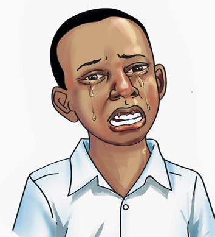
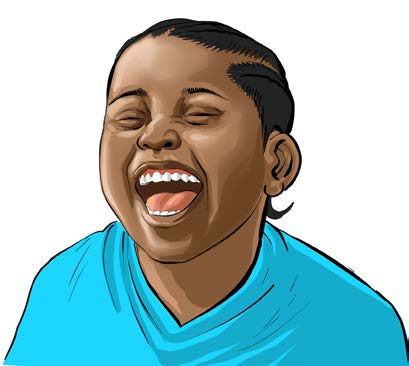

Mazoezi ya kucheka au kulia. Mazoezi hayo humsaidia mwigizaji kuamsha na kumudu hisia kwa ufanisi. Kucheka na kulia ni hisia za kawaida lakini inaweza kuwa changamoto kuzionesha kwa uhalisia katika uigizaji. Mwigizaji anaweza kucheka au kulia kwa sauti ya chini au ya juu, kama inavyoonekana katika Kielelezo namba 1.
A

B

Kazi ya kufanya namba 5
(a) Igiza kucheka kwa sauti ya chini kisha ongeza sauti polepole kufikia sauti ya juu.
(b) Igiza kulia kimya kimya, kisha kwa sauti ya chini na ongeza sauti kufikia sauti ya juu.
Zoezi la pili
1. Ni kitendo gani unaweza kufanya ili kuonesha kwamba una huzuni bila kusema neno lolote?
2. Eleza namna unavyoweza kuonesha hali ya hasira bila kupaza sauti katika uigizaji.